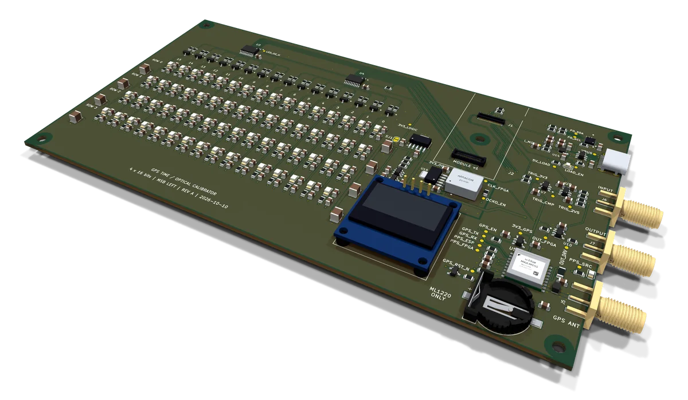
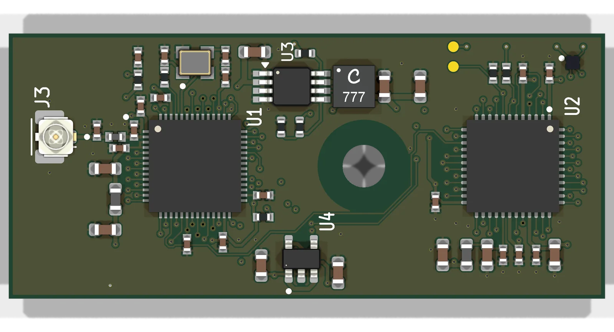
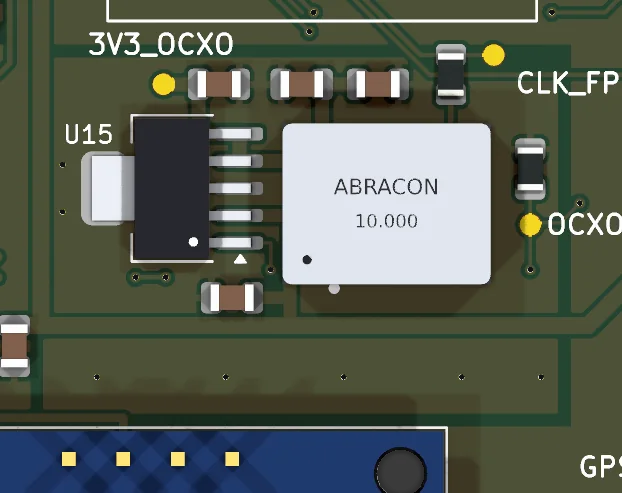
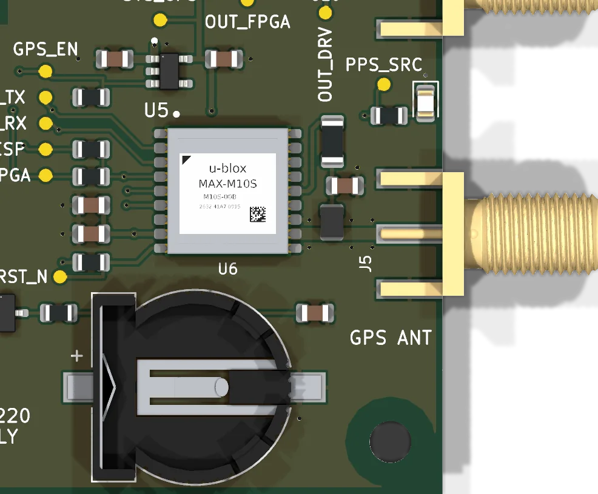
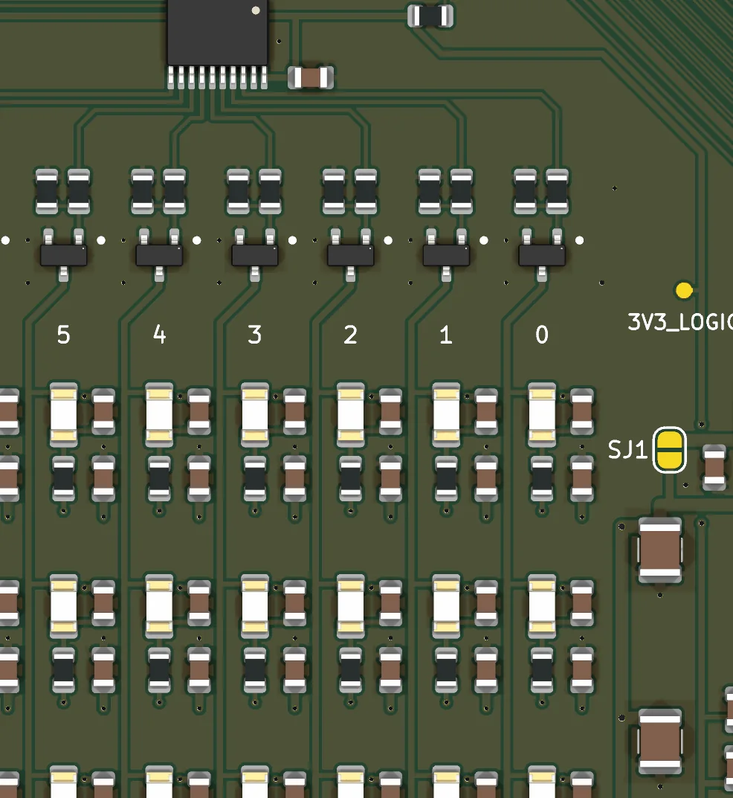
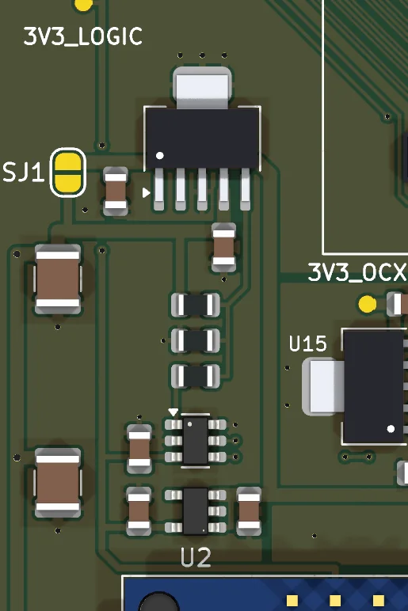
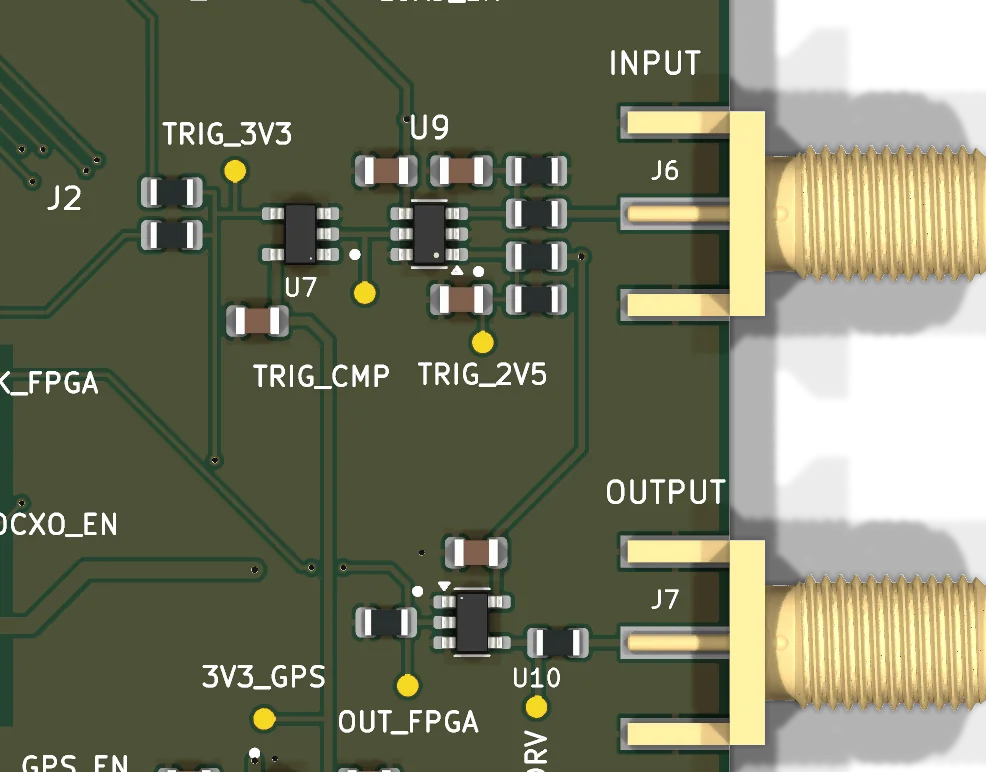
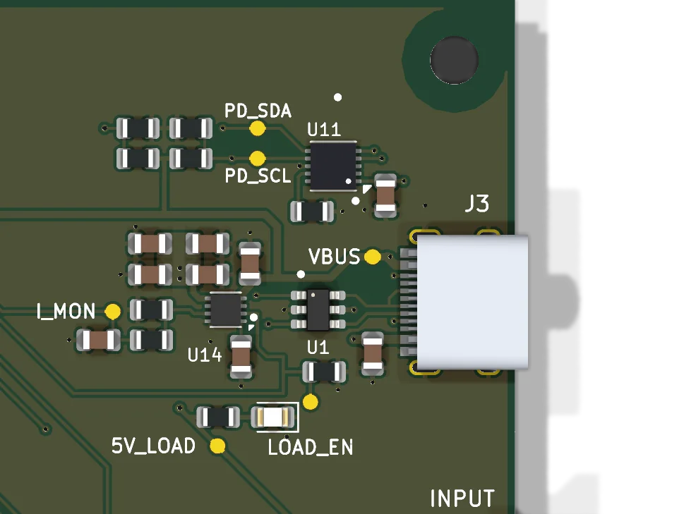
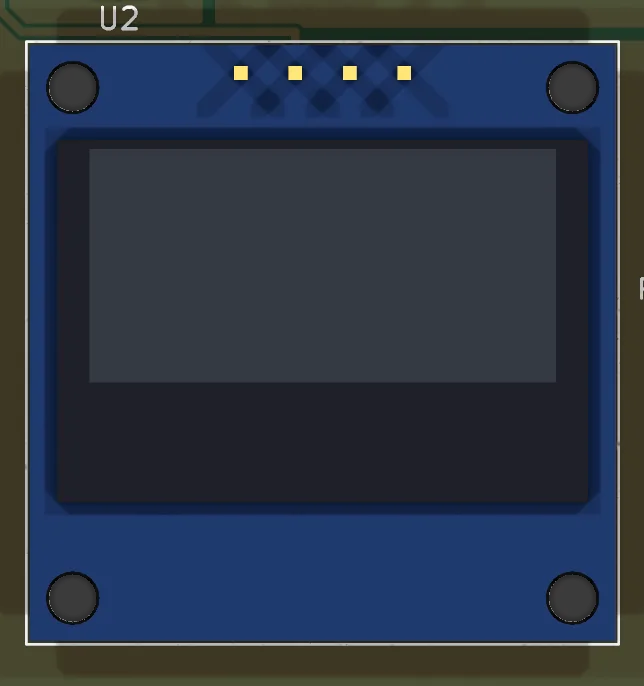
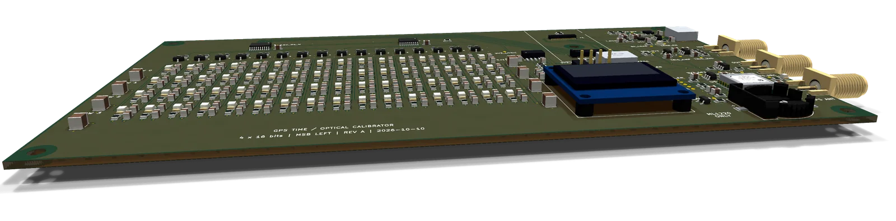

The clock your camera can't argue with: a GNSS-disciplined reference clock that
shows the fraction of the current UTC second on 64 LEDs, so any picture of it
carries the time it was taken.
u-blox MAX-M10S10 MHz OCXOiCE40UP5K + ESP32-S216-bit optical wordNTP server
Beta hardware: revision A carriers are in bring-up.

RENDERED FROM THE KICAD DESIGN · MODULE NOT SHOWN
Stratum 0, made visible.
In NTP terms, stratum 0 is the reference clock everything else is measured against.
StratumZero is that reference with a face. A GNSS receiver supplies
absolute time and a pulse every second, an oven-controlled oscillator fills in between
the pulses, and an FPGA turns the result into a 16-bit binary word on a 4 × 16 LED
array. Point a camera at it and every frame records its own UTC timestamp, to within
1/65536 of a second, without trusting the camera's clock.
The same timebase timestamps electrical edges on an SMA input, fires scheduled pulses
on an SMA output, and serves NTP over Wi-Fi. The carrier is a 180 × 100 mm two-layer
board; the compute lives on the
gumstick, an open ESP32 +
iCE40 module that plugs into it.
Where the time comes from
Time flows left to right. The FPGA is the only part that touches an edge; the ESP32
decides what each edge means and tells the world.
Signal-flow diagram (illustration). Colours match the blocks in the 3D view.
Edges stay in hardware. The PPS pulse and trigger edges are registered
in FPGA I/O cells against a 64-bit counter of OCXO ticks, so USB, Wi-Fi, task latency
and display refresh never decide when something happened. The ESP32 reads those
captures over SPI and attaches the UTC second the GNSS receiver reported for each
pulse.
Ticks become UTC by fitting. Each PPS anchors a tick count to a UTC
second. The firmware fits the OCXO's frequency across those anchors and places any
tick in between on the UTC timeline with an uncertainty attached, then programs the
FPGA's phase accumulator so the LED word tracks the same clock.
Explore the board
The carrier and module from their KiCad designs. Drag to orbit, scroll or pinch to
zoom, and choose a block or click any part to see what it does. Lift the module to see
the connectors beneath it.
The 3D model (about 2 MB) loads when this section comes into view.
Choose a block, or click any part on the board.
Real component geometry where a manufacturer or KiCad model exists; the OCXO, OLED and
a few others are drawing-derived or simplified envelopes.
Subsystems

Compute module
The gumstick carries an iCE40UP5K FPGA and an
ESP32-S2 on a 20 × 45 mm board. It plugs into two Hirose DF40
connectors 25 mm apart, held by one M3 screw midway between them. The FPGA's
1.2 V core and the module's 3.3 V are made on the module from the carrier's 5 V;
Wi-Fi uses an external antenna on a U.FL jack.
The FPGA keeps time: a 64-bit counter on the OCXO, a 512-record capture FIFO for
PPS and trigger edges, the optical word, and a tick-scheduled output. The ESP32
runs Rust firmware that configures the receiver, sequences power and serves the
web interface, a JSON and Server-Sent Events API, and NTP.

10 MHz OCXO
An Abracon AOC97 oven-controlled crystal oscillator is the
short-term timebase: the FPGA counts its 10 MHz cycles in 100 ns ticks. Keeping
the crystal at a constant temperature makes its frequency far steadier between
GNSS pulses than a plain crystal. It has its own 1.5 A low-noise regulator,
switched by the ESP32, on a ground-poured island, and the firmware waits out a
three-minute warm-up before it trusts the clock.

GNSS receiver
A u-blox MAX-M10S tracks GPS, Galileo, GLONASS and BeiDou. Its
PPS goes straight to the FPGA; its UBX messages tell the firmware which UTC
second each pulse marks and how good the fix is. The antenna feed is a 50 Ω
grounded coplanar line with a via fence, and a rechargeable ML1220 cell keeps the
receiver's clock and almanac alive for about three weeks unpowered, so restarts
are hot.

Optical time word
Four identical rows of sixteen green LEDs show bit 15 on the left down to bit 0,
the fraction of the current UTC second in units of 1/65536 s (15.26 µs). Sixteen
MOSFETs switch the columns from two buffers, and the rows update together, never
multiplexed. Every LED gets the same 470 Ω resistor, 47 pF speed-up capacitor and
100 nF bypass, laid out the same way, so each one turns on with the same edge.

LED brightness
The LEDs run from their own rail, made by an adjustable regulator whose set point
a 12-bit DAC pulls between about 2.9 V and 4.7 V. Brightness can follow the
camera's exposure without touching the timing, and a solder jumper bypasses it
for fixed full brightness.

Trigger I/O
The input takes 0 to 5 V logic through an RC filter into a 4.5 ns comparator at
2.5 V, then a 3.3 V Schmitt buffer that feeds the FPGA, the ESP32 and the
receiver's EXTINT pin: one edge, three independent timestamps. The output is a
pulse the FPGA starts on an exact tick, driven as 5 V logic for a
high-impedance load.

USB-C power
A PD sink controller asks only for 5 V / 3 A. The ESP32 reads the negotiated
contract before it closes an eFuse onto the switched 5 V domain (2.48 A limit,
soft start, current monitor), then brings up the GNSS, oscillator and display
rails in turn. USB data goes straight to the ESP32-S2 for flashing and a console.

Status display
A 0.96-inch 128 × 64 OLED is for people: the time in large digits, redrawn on
each UTC second, with lock state, satellites, power and the IP address rotating
underneath. A separate 3.3 V regulator feeds it, the LED buffers and the
brightness DAC.
How a camera reads the time

Low-angle render across the LED array.
The array shows floor(65536 × fraction of the UTC second). A global-shutter
exposure shorter than one bit captures a single word: read the 16 bits, add the UTC
second, and that is the exposure time. Longer exposures blur the low bits, which says
how long the shutter was open. On a rolling-shutter sensor each row is exposed at a
different moment, so the word visibly changes part-way down the frame, and the rows
where low bits flip measure the sensor's line time and place each line on the UTC
timeline. The four rows are redundant copies, so a partly hidden array still reads.
The hardware sets the reference; absolute accuracy still has to be shown, LED by LED
and edge by edge, with a fast photodiode. That validation is part of the bring-up
plan.
Renders
Raytraced in KiCad from the production design files. Select a render to open it full size.
Carrier underside: the LED supply buses and ground plane.
Status
Revision A carriers are built and in bring-up. The board powers up
through its full sequence, locks to GNSS and runs the optical word, the OLED clock,
NTP and the web interface over Wi-Fi.
The timebase is 10 MHz. The iCE40UP5K's only PLL output shares a pin
with the PPS input on this revision, so ticks are 100 ns rather than the planned
12.5 ns. The next revision moves PPS.
The oscillator and Wi-Fi had to learn to share. The OCXO's fast
clock edges radiated into the 2.4 GHz band; antenna placement fixed most of it, and
the next revision filters and shields the clock line.
Optical timing still has to be measured. LED-to-LED edge timing and
absolute offset need a photodiode campaign before the word is called calibrated.
Notes
Renders and the 3D model come from the KiCad 10 design. Component models are from the
KiCad libraries (CC BY-SA 4.0 with the KiCad library exception), the manufacturer (the
USB-C jack) or were drawn for this
project from datasheets; the OCXO, OLED and several connectors are
simplified envelopes. The viewer uses three.js
(MIT). The compute module design is open at
OrbitalCommons/gumstick.